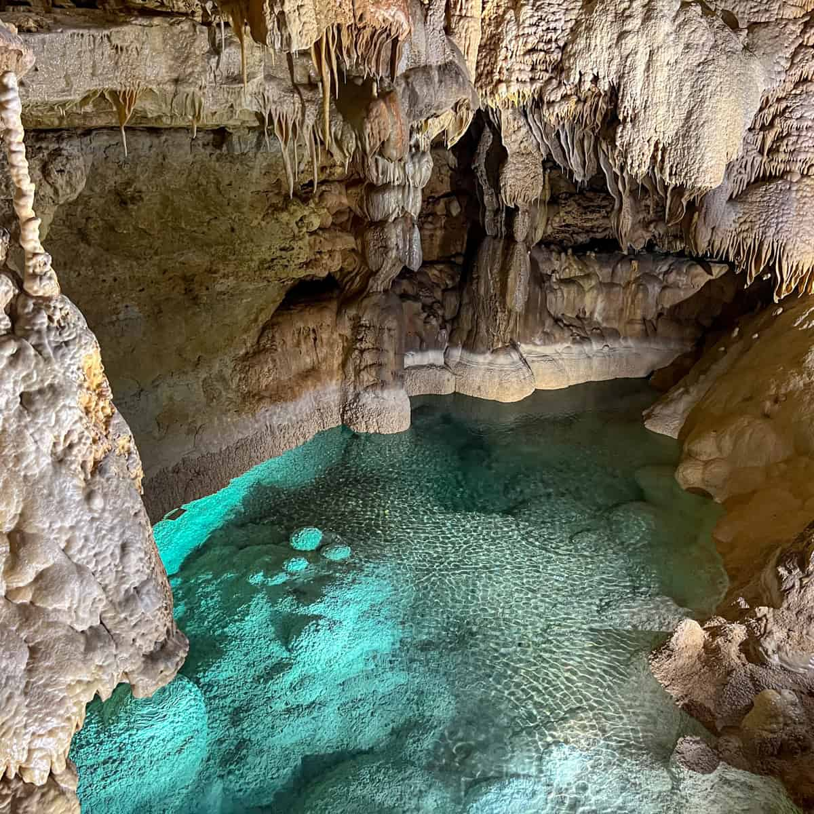

Descubra o legado do Velho Oeste
O Texas preserva locais icônicos que remetem ao tempo dos cowboys, dos saloons e dos grandes confrontos do oeste selvagem. Conheça 5 destinos imperdíveis!
The Alamo
Cidade: San Antonio
Um dos marcos mais importantes da Revolução do Texas, cenário da famosa Batalha de 1836.
Cadillac Ranch
Cidade: Amarillo
Instalação artística icônica que homenageia a cultura automobilística e o espírito livre do Oeste.

Natural Bridge Caverns
Cidade: San Antonio
Explorações subterrâneas incríveis entre formações rochosas e mistérios da natureza texana.
San Antonio River Walk
Cidade: San Antonio
Charmoso passeio à beira do rio com restaurantes e história viva do velho Texas.
Houston Zoo
Cidade: Houston
Mais de 6 mil animais em um zoológico premiado, símbolo da vida e preservação texana.